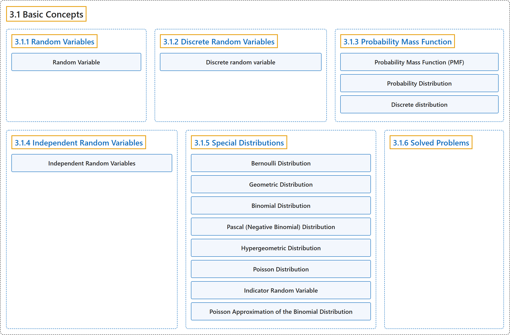

3.1 Basic Concepts
Classification

Glossary
| Term | Definition | 中文翻译 | Source |
|---|---|---|---|
| 3.1 Basic Concepts 基本概念 |
(No definition) | （无定义） | Pishro-Nik, 2014, section 3.1 |
| 3.1.1 Random Variables 随机变量 |
(No definition) | （无定义） | Pishro-Nik, 2014, section 3.1.1 |
| Random Variable 随机变量 |
"A random variable \(X\) is a function from the sample space to the real numbers." | 随机变量 \(X\) 是从样本空间到实数集的函数。 | Pishro-Nik, 2014, section 3.1.1 |
| 3.1.2 Discrete Random Variables 离散随机变量 |
(No definition) | （无定义） | Pishro-Nik, 2014, section 3.1.2 |
| Discrete random variable 离散随机变量 |
(context) "A random variable is a measurable function from a probability space ... into a measurable space ... known as the state space ..." | （语境）随机变量是从概率空间到可测空间的可测函数……后者称为状态空间…… | Weisstein, n.d.-c, "Random variable" entry, para. 1 |
| 3.1.3 Probability Mass Function 概率质量函数 |
(No definition) | （无定义） | Pishro-Nik, 2014, section 3.1.3 |
| Probability Mass Function (PMF) 概率质量函数（PMF） |
"Let \(X\) be a discrete random variable with range \(R_X=\{x_1,x_2,x_3,...\}\) (finite or countably infinite). The function \(P_X(x_k)=P(X=x_k), \textrm{ for } k=1,2,3,...,\) is called the probability mass function (PMF) of \(X\)." | 设 \(X\) 是取值范围为 \(R_X=\{x_1,x_2,x_3,...\}\)（有限或可数无限）的离散随机变量。函数 \(P_X(x_k)=P(X=x_k), \textrm{ for } k=1,2,3,...,\) 称为 \(X\) 的概率质量函数（PMF）。 | Pishro-Nik, 2014, section 3.1.3 |
| Probability Distribution 概率分布 |
"For discrete random variables, the PMF is also called the probability distribution." | 对于离散随机变量，PMF 也称为概率分布。 | Pishro-Nik, 2014, section 3.1.3 |
| Discrete distribution 离散分布 |
"A discrete distribution is a statistical distribution whose random variable takes values in a countable set almost surely." | 离散分布是一种统计分布，它的随机变量几乎必然在一个可数集合中取值。 | Weisstein, n.d.-a, "Discrete distribution" entry, para. 1 |
| 3.1.4 Independent Random Variables 独立随机变量 |
(No definition) | （无定义） | Pishro-Nik, 2014, section 3.1.4 |
| Independent Random Variables 独立随机变量 |
"Consider two discrete random variables \(X\) and \(Y\). We say that \(X\) and \(Y\) are independent if \(P\bigg(X=x,Y=y\bigg)=P(X=x) P(Y=y), \hspace{20pt} \textrm{ for all } x,y.\)" | 考虑两个离散随机变量 \(X\) 和 \(Y\)。若 \(P\bigg(X=x,Y=y\bigg)=P(X=x) P(Y=y), \hspace{20pt} \textrm{ for all } x,y.\) 则称 \(X\) 和 \(Y\) 相互独立。 | Pishro-Nik, 2014, section 3.1.4 |
| 3.1.5 Special Distributions 特殊分布 |
(No definition) | （无定义） | Pishro-Nik, 2014, section 3.1.5 |
| Bernoulli Distribution 伯努利分布 |
"A random variable \(X\) is said to be a Bernoulli random variable with parameter \(p\), shown as \(X \sim Bernoulli(p)\), if its PMF is given by \(\begin{equation} \nonumber P_X(x) = \left\{ \begin{array}{l l} p& \quad \text{for } x=1\\ 1-p & \quad \text{ for } x=0\\ 0 & \quad \text{ otherwise} \end{array} \right. \end{equation}\) where \(0 < p < 1\)." | 若随机变量 \(X\) 的 PMF 为 \(\begin{equation} \nonumber P_X(x) = \left\{ \begin{array}{l l} p& \quad \text{for } x=1\\ 1-p & \quad \text{ for } x=0\\ 0 & \quad \text{ otherwise} \end{array} \right. \end{equation}\) 其中 \(0 < p < 1\)，则称 \(X\) 为参数为 \(p\) 的伯努利随机变量，记作 \(X \sim Bernoulli(p)\)。 | Pishro-Nik, 2014, section 3.1.5 |
| Geometric Distribution 几何分布 |
"A random variable \(X\) is said to be a geometric random variable with parameter \(p\), shown as \(X \sim Geometric(p)\), if its PMF is given by \(\begin{equation} \nonumber P_X(k) = \left\{ \begin{array}{l l} p(1-p)^{k-1}& \quad \text{for } k=1,2,3,...\\ 0 & \quad \text{ otherwise} \end{array} \right. \end{equation}\) where \(0 < p < 1\)." | 若随机变量 \(X\) 的 PMF 为 \(\begin{equation} \nonumber P_X(k) = \left\{ \begin{array}{l l} p(1-p)^{k-1}& \quad \text{for } k=1,2,3,...\\ 0 & \quad \text{ otherwise} \end{array} \right. \end{equation}\) 其中 \(0 < p < 1\)，则称 \(X\) 为参数为 \(p\) 的几何随机变量，记作 \(X \sim Geometric(p)\)。 | Pishro-Nik, 2014, section 3.1.5 |
| Binomial Distribution 二项分布 |
"A random variable \(X\) is said to be a binomial random variable with parameters \(n\) and \(p\), shown as \(X \sim Binomial(n,p)\), if its PMF is given by \(\begin{equation} \nonumber P_X(k) = \left\{ \begin{array}{l l} {n \choose k}p^k(1-p)^{n-k}& \quad \text{for } k=0,1,2,\cdots,n\\ 0 & \quad \text{otherwise} \end{array} \right. \end{equation}\) where \(0 < p < 1\)." | 若随机变量 \(X\) 的 PMF 为 \(\begin{equation} \nonumber P_X(k) = \left\{ \begin{array}{l l} {n \choose k}p^k(1-p)^{n-k}& \quad \text{for } k=0,1,2,\cdots,n\\ 0 & \quad \text{otherwise} \end{array} \right. \end{equation}\) 其中 \(0 < p < 1\)，则称 \(X\) 为参数为 \(n\) 和 \(p\) 的二项随机变量，记作 \(X \sim Binomial(n,p)\)。 | Pishro-Nik, 2014, section 3.1.5 |
| Pascal (Negative Binomial) Distribution 帕斯卡分布（负二项分布） |
"A random variable \(X\) is said to be a Pascal random variable with parameters \(m\) and \(p\), shown as \(X \sim Pascal(m,p)\), if its PMF is given by \(\begin{equation} \nonumber P_X(k) = \left\{ \begin{array}{l l} {k-1 \choose m-1} p^{m}(1-p)^{k-m}& \quad \text{for } k=m,m+1,m+2,m+3,...\\ 0 & \quad \text{otherwise} \end{array} \right. \end{equation}\) where \(0 < p < 1\)." | 若随机变量 \(X\) 的 PMF 为 \(\begin{equation} \nonumber P_X(k) = \left\{ \begin{array}{l l} {k-1 \choose m-1} p^{m}(1-p)^{k-m}& \quad \text{for } k=m,m+1,m+2,m+3,...\\ 0 & \quad \text{otherwise} \end{array} \right. \end{equation}\) 其中 \(0 < p < 1\)，则称 \(X\) 为参数为 \(m\) 和 \(p\) 的帕斯卡随机变量，记作 \(X \sim Pascal(m,p)\)。 | Pishro-Nik, 2014, section 3.1.5 |
| Hypergeometric Distribution 超几何分布 |
"A random variable \(X\) is said to be a Hypergeometric random variable with parameters \(b, r\) and \(k\), shown as \(X \sim Hypergeometric(b,r,k)\), if its range is \(R_X=\{\max(0,k-r), \max(0,k-r)+1, \max(0,k-r)+2,..., \min(k,b)\}\), and its PMF is given by \(\begin{equation} \nonumber P_X(x) = \left\{ \begin{array}{l l} \frac{{b \choose x} {r \choose k-x}}{{b+r \choose k}}& \quad \text{for } x \in R_X\\ 0 & \quad \text{otherwise} \end{array} \right. \end{equation}\)" | 设随机变量 \(X\) 的取值范围为 \(R_X=\{\max(0,k-r), \max(0,k-r)+1, \max(0,k-r)+2,..., \min(k,b)\}\)，其 PMF 为 \(\begin{equation} \nonumber P_X(x) = \left\{ \begin{array}{l l} \frac{{b \choose x} {r \choose k-x}}{{b+r \choose k}}& \quad \text{for } x \in R_X\\ 0 & \quad \text{otherwise} \end{array} \right. \end{equation}\)，则称 \(X\) 为参数为 \(b, r\) 和 \(k\) 的超几何随机变量，记作 \(X \sim Hypergeometric(b,r,k)\)。 | Pishro-Nik, 2014, section 3.1.5 |
| Poisson Distribution 泊松分布 |
"A random variable \(X\) is said to be a Poisson random variable with parameter \(\lambda\), shown as \(X \sim Poisson(\lambda)\), if its range is \(R_X=\{0,1,2,3,...\}\), and its PMF is given by \(\begin{equation} \nonumber P_X(k) = \left\{ \begin{array}{l l} \frac{e^{-\lambda} \lambda^k}{k!}& \quad \text{for } k \in R_X\\ 0 & \quad \text{ otherwise} \end{array} \right. \end{equation}\)" | 若随机变量 \(X\) 的取值范围为 \(R_X=\{0,1,2,3,...\}\)，其 PMF 为 \(\begin{equation} \nonumber P_X(k) = \left\{ \begin{array}{l l} \frac{e^{-\lambda} \lambda^k}{k!}& \quad \text{for } k \in R_X\\ 0 & \quad \text{ otherwise} \end{array} \right. \end{equation}\)，则称 \(X\) 为参数为 \(\lambda\) 的泊松随机变量，记作 \(X \sim Poisson(\lambda)\)。 | Pishro-Nik, 2014, section 3.1.5 |
| Indicator Random Variable 示性随机变量（指示随机变量） |
"For this reason the Bernoulli random variable, is also called the indicator random variable. In particular, the indicator random variable \(I_A\) for an event \(A\) is defined by" | 因此伯努利随机变量也称为指示随机变量。具体地说，事件 \(A\) 的指示随机变量 \(I_A\) 定义为 | Pishro-Nik, 2014, section 3.1.5 |
| Poisson Approximation of the Binomial Distribution 泊松分布对二项分布的近似 |
"The Poisson distribution can be viewed as the limit of binomial distribution. Suppose \(X \sim Binomial(n,p)\) where \(n\) is very large and \(p\) is very small." | 泊松分布可视为二项分布的极限。设 \(X \sim Binomial(n,p)\)，其中 \(n\) 很大而 \(p\) 很小。 | Pishro-Nik, 2014, section 3.1.5 |
| 3.1.6 Solved Problems 例题详解 |
(No definition) | （无定义） | Pishro-Nik, 2014, section 3.1.6 |
References
Pishro-Nik, H. (2014). Introduction to probability, statistics, and random processes. Kappa Research. Retrieved October 28, 2026, from https://www.probabilitycourse.com/
Weisstein, E. W. (n.d.-c). Random variable. MathWorld: A Wolfram Resource. Retrieved October 27, 2026, from https://mathworld.wolfram.com/RandomVariable.html
Weisstein, E. W. (n.d.-a). Discrete distribution. MathWorld: A Wolfram Resource. Retrieved October 27, 2026, from https://mathworld.wolfram.com/DiscreteDistribution.html